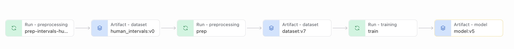
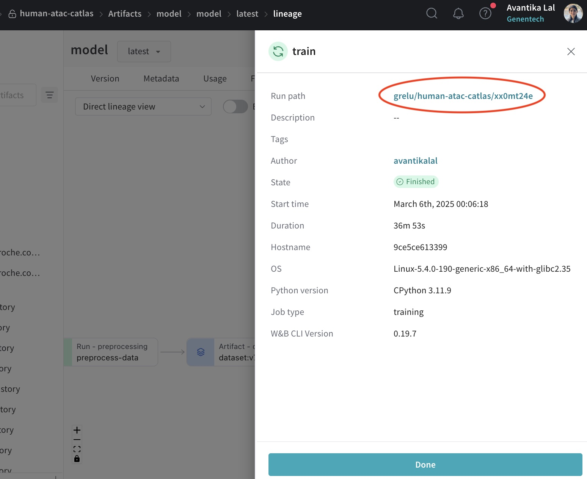
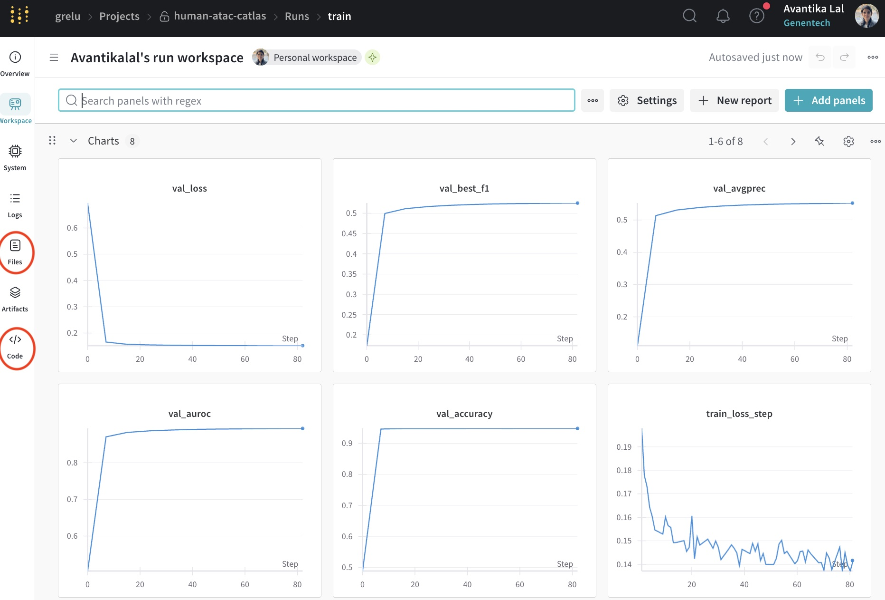

Querying the public gReLU model zoo on Weights and Biases (wandb)#
This tutorial shows how to query our public model zoo and download models and datasets, both programmatically and via your browser. The model zoo is located at https://wandb.ai/grelu/.
Rules#
wandb projects are the main storage units for datasets and the models trained on them. The main idea is to always keep the links between the dataset, code, and the trained models - for reproducibility, documentation and sanity reasons.
Each project contains notebooks showing the code used for data preprocessing, model training and model testing. For models trained by us, the training logs are also available.
In addition, the model checkpoints downloaded from the model zoo, like all gReLU model checkpoints, contain detailed metadata including genomic regions used for training, validation and testing, performance metrics, model and training hyperparameters.
import os
import anndata
import grelu.resources
List all available projects in the zoo#
The grelu.resources module contains functions for interacting with the model zoo. First, we can list all available projects in the zoo:
grelu.resources.projects()
['human-mpra-gosai-2024',
'GM12878_dnase',
'demo',
'human-mpra-agrawal-2023',
'binary_atac_cell_lines',
'model-zoo-test',
'alzheimers-variant-tutorial',
'microglia-scatac-tutorial',
'human-chromhmm-fullstack',
'human-atac-catlas',
'borzoi',
'yeast-gpra',
'enformer']
You can also view all projects in your browser at https://wandb.ai/grelu/projects.
We choose the ‘human-atac-catlas’ project to interact with.
List all datasets and models in a project#
project_name = 'human-atac-catlas'
Individual objects such as datasets and models are stored as ‘artifacts’ under each project. Artifacts can be of different types, but the ones that we are generally interested in are “dataset” (the preprocessed dataset) and “model” (the trained model). We can search for these under the project of interest:
grelu.resources.artifacts(project_name, type_is="dataset")
['dataset']
This tells us that there is an artifact called “dataset” which is of the “dataset” type.
grelu.resources.artifacts(project_name, type_is="model")
['model-xx0mt24e', 'model']
This tells us that there is an artifact called “model” which is of the “model” type.
You can also navigate to the project page in your browser
Download a dataset#
Let us now select the “dataset” artifact.
artifact = grelu.resources.get_artifact(
name="dataset",
project = project_name,
)
artifact
<Artifact QXJ0aWZhY3Q6MTU0OTEyNDUwMQ==>
We can download this artifact into a local directory.
artifact_dir = artifact.download()
artifact_dir
'/code/gReLU/docs/tutorials/artifacts/dataset:v7'
We can list the iles in this directory:
os.listdir(artifact_dir)
['data.h5ad']
ad = anndata.read_h5ad(os.path.join(artifact_dir, 'data.h5ad'))
ad
AnnData object with n_obs × n_vars = 204 × 1121319
obs: 'cell type'
var: 'chrom', 'start', 'end', 'cre_class', 'in_fetal', 'in_adult', 'cre_module', 'width', 'cre_idx', 'enformer_split', 'split'
We could download the trained model from the zoo in a similar way. However, we have an additional function to download a model from the zoo and directly load it into memory in one step.
One-step downloading and loading a model#
model = grelu.resources.load_model(
project=project_name,
model_name='model'
) # that's it!
type(model)
grelu.lightning.LightningModel
Note that by default, this function downloads the latest version of the model. If there are multiple model versions and you want to download a specific version, you can specify the version name using the alias parameter.
Lineage, training logs and code#
On the webpage, you can find the complete details of how any model was created. Navigate to the model webpage from the landing page, or enter the URL https://wandb.ai/grelu/<project name>/artifacts/model/model/<latest>.
For this, model, the URL is: https://wandb.ai/grelu/human-atac-catlas/artifacts/model/model/latest
Click on the Lineage tab to see the model’s lineage:

This shows the steps involved in creating the model, along with intermediate data artifacts.
Click on the train run, then click on run path to navigate to the landing page of the run.

The landing page shows the loss and metric curves during training. More information is available on the tabs on the left:
Click on the
Codetab to see the code.Click on the
Filestab to see and download log files.
